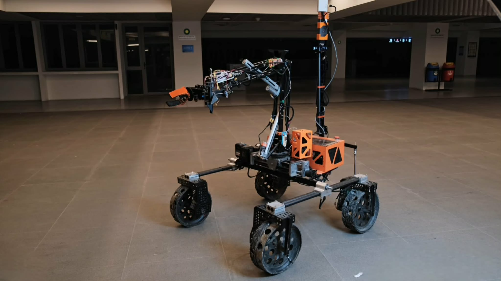
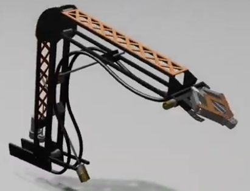
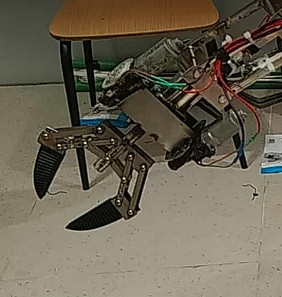

The rover’s autonomous navigation system was designed to enable reliable long-distance traversal and mission execution in complex, GPS-denied and obstacle-rich environments. The system integrates stereo vision perception, dual GNSS-INS localization, and a ROS2-based decision framework to autonomously navigate toward mission objectives while dynamically adapting to terrain and environmental conditions.
At the core of the system is a custom decision-tree navigation architecture that coordinates global planning, local obstacle avoidance, and search behaviors. The rover receives GNSS waypoints from the mission interface and uses a point-to-point global planner combined with a terrain-aware local planner that continuously evaluates elevation changes and obstacle proximity using stereo depth maps generated by two ZED 2i cameras.
To ensure precise localization even under sensor drift or signal degradation, the rover combines a tactical-grade INS with dual-antenna RTK GNSS to achieve centimeter-level positional accuracy and heading precision within 0.2°. A secondary AHRS-based IMU acts as a redundancy layer to maintain orientation stability when magnetometer drift occurs. Sensor data is processed through distributed ROS2 nodes, enabling asynchronous communication between navigation, perception, and control modules.
Operational monitoring is handled through a custom web-based graphical interface, which streams real-time telemetry, camera feeds, and rover position on an offline map. Operators can input GNSS targets, monitor sensor data, and intervene through teleoperation when necessary. This system architecture ensures both high autonomy and operational transparency during field missions.

Motivation & Constraints:
The goal was to build a navigation framework capable of handling long-distance autonomous traversal in uneven terrain while maintaining reliable communication with the control station.
Results & Evaluation
Field tests demonstrated significant improvements in navigation accuracy, obstacle handling, and operational efficiency.
Key performance outcomes included:


My contributions:
Learnings:
Reflection (What didn’t work & next iteration):
Early versions of the navigation framework relied heavily on GNSS waypoint following, which caused inefficient paths when obstacles were present. This resulted in unnecessary detours and occasional oscillations in steering behavior.
To address this, the navigation stack was redesigned with a terrain-aware local planner that dynamically evaluates elevation changes and obstacle proximity using point cloud data from stereo cameras. This significantly improved path efficiency and reduced navigation errors.
{kind=link}
{kind=link}